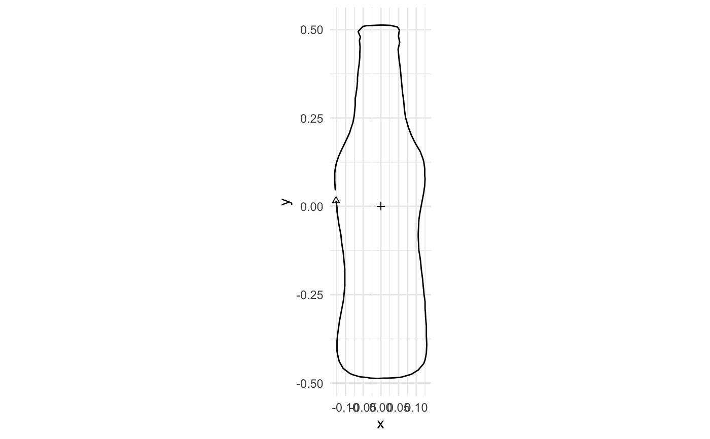

Scale and center shapes to fit in a standard template box.
Usage
coo_template(x, ..., .cols = NULL, .ldk_col = NULL)
coo_template_relatively(x, size = 1, ..., .cols = NULL, .ldk_col = NULL)Value
If
xis a single matrix: returns the templated matrixIf
xis a list: returns a list of templated matricesIf
xis a tibble: returns the tibble with templated coo column(s)
Details
coo_template(): Scales each shape independently so its largest dimension
equals size, then centers it at the origin (0, 0).
coo_template_relatively(): Scales shapes while preserving relative sizes.
The largest shape gets size, others are scaled proportionally smaller.
All shapes are centered at (0, 0).
For a single matrix, both functions produce identical results.
coo_template_relatively() is perfect for mosaic() to create family pictures
where size relationships are preserved!
See also
mosaic() for visualization; coo_center() for centering; coo_scale() for normalization
Examples
# Single shape - both functions are identical
coo_template(shapes$cat, size = 1)
#> <xy [120 x 2]>
#> [,1] [,2]
#> [1,] 0.047 -0.261
#> [2,] 0.029 -0.288
#> [3,] 0.047 -0.288
#> [4,] 0.074 -0.297
#> [5,] 0.088 -0.324
#> [6,] ... ...
#> [7,] 0.133 -0.338
#> [8,] 0.106 -0.329
#> [9,] 0.083 -0.302
#> [10,] 0.065 -0.275
#> [11,] 0.056 -0.248
coo_template_relatively(shapes$cat, size = 1)
#> <xy [120 x 2]>
#> [,1] [,2]
#> [1,] 0.047 -0.261
#> [2,] 0.029 -0.288
#> [3,] 0.047 -0.288
#> [4,] 0.074 -0.297
#> [5,] 0.088 -0.324
#> [6,] ... ...
#> [7,] 0.133 -0.338
#> [8,] 0.106 -0.329
#> [9,] 0.083 -0.302
#> [10,] 0.065 -0.275
#> [11,] 0.056 -0.248
# Multiple shapes - independent scaling
coo_template(bot$coo, size = 1)
#> $brahma
#> <xy [138 x 2]>
#> [,1] [,2]
#> [1,] -0.126 0.003
#> [2,] -0.124 -0.017
#> [3,] -0.124 -0.027
#> [4,] -0.121 -0.046
#> [5,] -0.118 -0.065
#> [6,] ... ...
#> [7,] -0.129 0.090
#> [8,] -0.130 0.080
#> [9,] -0.130 0.061
#> [10,] -0.129 0.041
#> [11,] -0.128 0.032
#>
#> $caney
#> <xy [168 x 2]>
#> [,1] [,2]
#> [1,] -0.129 0.012
#> [2,] -0.129 0.002
#> [3,] -0.128 -0.018
#> [4,] -0.129 -0.028
#> [5,] -0.128 -0.038
#> [6,] ... ...
#> [7,] -0.106 0.094
#> [8,] -0.115 0.073
#> [9,] -0.120 0.062
#> [10,] -0.123 0.052
#> [11,] -0.127 0.032
#>
#> $chimay
#> <xy [189 x 2]>
#> [,1] [,2]
#> [1,] -0.187 0.001
#> [2,] -0.187 -0.012
#> [3,] -0.187 -0.023
#> [4,] -0.186 -0.035
#> [5,] -0.186 -0.047
#> [6,] ... ...
#> [7,] -0.172 0.072
#> [8,] -0.180 0.060
#> [9,] -0.184 0.049
#> [10,] -0.187 0.037
#> [11,] -0.189 0.024
#>
#> $corona
#> <xy [129 x 2]>
#> [,1] [,2]
#> [1,] -0.115 0.009
#> [2,] -0.115 -0.004
#> [3,] -0.116 -0.030
#> [4,] -0.115 -0.042
#> [5,] -0.115 -0.056
#> [6,] ... ...
#> [7,] -0.081 0.108
#> [8,] -0.091 0.083
#> [9,] -0.097 0.072
#> [10,] -0.102 0.058
#> [11,] -0.111 0.035
#>
#> $deusventrue
#> <xy [152 x 2]>
#> [,1] [,2]
#> [1,] -0.119 -0.017
#> [2,] -0.124 -0.027
#> [3,] -0.133 -0.047
#> [4,] -0.136 -0.058
#> [5,] -0.144 -0.080
#> [6,] ... ...
#> [7,] -0.090 0.067
#> [8,] -0.093 0.055
#> [9,] -0.101 0.035
#> [10,] -0.104 0.025
#> [11,] -0.110 0.005
#>
#> $duvel
#> <xy [161 x 2]>
#> [,1] [,2]
#> [1,] -0.193 0.002
#> [2,] -0.193 -0.017
#> [3,] -0.193 -0.035
#> [4,] -0.193 -0.035
#> [5,] -0.193 -0.053
#> [6,] ... ...
#> [7,] -0.172 0.091
#> [8,] -0.180 0.073
#> [9,] -0.186 0.056
#> [10,] -0.186 0.056
#> [11,] -0.190 0.038
#>
#> $franziskaner
#> <xy [124 x 2]>
#> [,1] [,2]
#> [1,] -0.124 0.002
#> [2,] -0.124 -0.023
#> [3,] -0.124 -0.034
#> [4,] -0.124 -0.056
#> [5,] -0.124 -0.068
#> [6,] ... ...
#> [7,] -0.117 0.109
#> [8,] -0.118 0.085
#> [9,] -0.120 0.073
#> [10,] -0.124 0.049
#> [11,] -0.124 0.038
#>
#> $grimbergen
#> <xy [126 x 2]>
#> [,1] [,2]
#> [1,] -0.162 -0.005
#> [2,] -0.165 -0.018
#> [3,] -0.165 -0.045
#> [4,] -0.165 -0.059
#> [5,] -0.165 -0.073
#> [6,] ... ...
#> [7,] -0.120 0.104
#> [8,] -0.139 0.078
#> [9,] -0.146 0.063
#> [10,] -0.152 0.050
#> [11,] -0.159 0.023
#>
#> $guiness
#> <xy [183 x 2]>
#> [,1] [,2]
#> [1,] -0.152 -0.004
#> [2,] -0.152 -0.015
#> [3,] -0.152 -0.026
#> [4,] -0.152 -0.038
#> [5,] -0.152 -0.059
#> [6,] ... ...
#> [7,] -0.147 0.073
#> [8,] -0.150 0.061
#> [9,] -0.155 0.040
#> [10,] -0.154 0.030
#> [11,] -0.152 0.018
#>
#> $hoegardeen
#> <xy [193 x 2]>
#> [,1] [,2]
#> [1,] -0.125 -0.001
#> [2,] -0.127 -0.013
#> [3,] -0.127 -0.025
#> [4,] -0.127 -0.037
#> [5,] -0.127 -0.050
#> [6,] ... ...
#> [7,] -0.110 0.071
#> [8,] -0.114 0.058
#> [9,] -0.117 0.047
#> [10,] -0.121 0.034
#> [11,] -0.122 0.022
#>
#> $jupiler
#> <xy [156 x 2]>
#> [,1] [,2]
#> [1,] -0.118 -0.011
#> [2,] -0.119 -0.025
#> [3,] -0.119 -0.039
#> [4,] -0.119 -0.053
#> [5,] -0.119 -0.067
#> [6,] ... ...
#> [7,] -0.099 0.072
#> [8,] -0.104 0.058
#> [9,] -0.107 0.045
#> [10,] -0.111 0.030
#> [11,] -0.114 0.016
#>
#> $kingfisher
#> <xy [182 x 2]>
#> [,1] [,2]
#> [1,] -0.130 0.010
#> [2,] -0.130 -0.004
#> [3,] -0.130 -0.017
#> [4,] -0.130 -0.031
#> [5,] -0.130 -0.045
#> [6,] ... ...
#> [7,] -0.116 0.091
#> [8,] -0.120 0.078
#> [9,] -0.123 0.064
#> [10,] -0.127 0.050
#> [11,] -0.127 0.036
#>
#> $latrappe
#> <xy [136 x 2]>
#> [,1] [,2]
#> [1,] -0.203 0.013
#> [2,] -0.204 -0.003
#> [3,] -0.204 -0.021
#> [4,] -0.204 -0.037
#> [5,] -0.204 -0.055
#> [6,] ... ...
#> [7,] -0.200 0.115
#> [8,] -0.204 0.097
#> [9,] -0.203 0.081
#> [10,] -0.203 0.063
#> [11,] -0.203 0.047
#>
#> $lindemanskriek
#> <xy [176 x 2]>
#> [,1] [,2]
#> [1,] -0.127 0.003
#> [2,] -0.127 -0.007
#> [3,] -0.133 -0.025
#> [4,] -0.134 -0.036
#> [5,] -0.134 -0.046
#> [6,] ... ...
#> [7,] -0.106 0.075
#> [8,] -0.108 0.065
#> [9,] -0.112 0.054
#> [10,] -0.114 0.044
#> [11,] -0.121 0.024
#>
#> $nicechouffe
#> <xy [146 x 2]>
#> [,1] [,2]
#> [1,] -0.129 0.001
#> [2,] -0.130 -0.010
#> [3,] -0.136 -0.035
#> [4,] -0.136 -0.048
#> [5,] -0.138 -0.060
#> [6,] ... ...
#> [7,] -0.109 0.085
#> [8,] -0.113 0.073
#> [9,] -0.116 0.060
#> [10,] -0.119 0.050
#> [11,] -0.125 0.026
#>
#> $pecheresse
#> <xy [129 x 2]>
#> [,1] [,2]
#> [1,] -0.117 -0.005
#> [2,] -0.120 -0.026
#> [3,] -0.120 -0.036
#> [4,] -0.121 -0.057
#> [5,] -0.123 -0.078
#> [6,] ... ...
#> [7,] -0.093 0.086
#> [8,] -0.096 0.075
#> [9,] -0.101 0.056
#> [10,] -0.107 0.036
#> [11,] -0.109 0.026
#>
#> $sierranevada
#> <xy [176 x 2]>
#> [,1] [,2]
#> [1,] -0.162 -0.012
#> [2,] -0.162 -0.031
#> [3,] -0.162 -0.031
#> [4,] -0.162 -0.050
#> [5,] -0.162 -0.069
#> [6,] ... ...
#> [7,] -0.159 0.083
#> [8,] -0.162 0.063
#> [9,] -0.165 0.044
#> [10,] -0.162 0.026
#> [11,] -0.162 0.026
#>
#> $tanglefoot
#> <xy [174 x 2]>
#> [,1] [,2]
#> [1,] -0.185 -0.007
#> [2,] -0.185 -0.019
#> [3,] -0.185 -0.031
#> [4,] -0.185 -0.054
#> [5,] -0.184 -0.066
#> [6,] ... ...
#> [7,] -0.179 0.075
#> [8,] -0.184 0.063
#> [9,] -0.185 0.051
#> [10,] -0.187 0.028
#> [11,] -0.187 0.016
#>
#> $tauro
#> <xy [174 x 2]>
#> [,1] [,2]
#> [1,] -0.117 -0.011
#> [2,] -0.119 -0.023
#> [3,] -0.119 -0.036
#> [4,] -0.119 -0.049
#> [5,] -0.119 -0.061
#> [6,] ... ...
#> [7,] -0.102 0.062
#> [8,] -0.105 0.050
#> [9,] -0.110 0.038
#> [10,] -0.112 0.025
#> [11,] -0.114 0.012
#>
#> $westmalle
#> <xy [141 x 2]>
#> [,1] [,2]
#> [1,] -0.120 -0.001
#> [2,] -0.120 -0.012
#> [3,] -0.124 -0.034
#> [4,] -0.124 -0.044
#> [5,] -0.126 -0.066
#> [6,] ... ...
#> [7,] -0.100 0.086
#> [8,] -0.104 0.074
#> [9,] -0.107 0.053
#> [10,] -0.113 0.042
#> [11,] -0.115 0.021
#>
#> $amrut
#> <xy [191 x 2]>
#> [,1] [,2]
#> [1,] -0.121 -0.002
#> [2,] -0.121 -0.014
#> [3,] -0.121 -0.025
#> [4,] -0.121 -0.037
#> [5,] -0.121 -0.049
#> [6,] ... ...
#> [7,] -0.123 0.067
#> [8,] -0.121 0.056
#> [9,] -0.121 0.044
#> [10,] -0.121 0.032
#> [11,] -0.121 0.021
#>
#> $ballantines
#> <xy [146 x 2]>
#> [,1] [,2]
#> [1,] -0.192 0.001
#> [2,] -0.192 -0.022
#> [3,] -0.192 -0.033
#> [4,] -0.192 -0.054
#> [5,] -0.192 -0.066
#> [6,] ... ...
#> [7,] -0.192 0.101
#> [8,] -0.192 0.079
#> [9,] -0.192 0.067
#> [10,] -0.192 0.045
#> [11,] -0.192 0.035
#>
#> $bushmills
#> <xy [165 x 2]>
#> [,1] [,2]
#> [1,] -0.122 0.005
#> [2,] -0.122 -0.012
#> [3,] -0.122 -0.031
#> [4,] -0.122 -0.031
#> [5,] -0.122 -0.048
#> [6,] ... ...
#> [7,] -0.125 0.092
#> [8,] -0.125 0.075
#> [9,] -0.125 0.057
#> [10,] -0.125 0.057
#> [11,] -0.125 0.040
#>
#> $chivas
#> <xy [164 x 2]>
#> [,1] [,2]
#> [1,] -0.187 -0.003
#> [2,] -0.189 -0.013
#> [3,] -0.192 -0.035
#> [4,] -0.192 -0.045
#> [5,] -0.192 -0.065
#> [6,] ... ...
#> [7,] -0.126 0.079
#> [8,] -0.136 0.070
#> [9,] -0.156 0.049
#> [10,] -0.164 0.038
#> [11,] -0.178 0.017
#>
#> $dalmore
#> <xy [155 x 2]>
#> [,1] [,2]
#> [1,] -0.188 0.001
#> [2,] -0.196 -0.016
#> [3,] -0.200 -0.036
#> [4,] -0.203 -0.054
#> [5,] -0.203 -0.071
#> [6,] ... ...
#> [7,] -0.114 0.089
#> [8,] -0.114 0.089
#> [9,] -0.133 0.073
#> [10,] -0.151 0.057
#> [11,] -0.166 0.039
#>
#> $famousgrouse
#> <xy [169 x 2]>
#> [,1] [,2]
#> [1,] -0.125 -0.003
#> [2,] -0.125 -0.020
#> [3,] -0.125 -0.035
#> [4,] -0.125 -0.051
#> [5,] -0.125 -0.051
#> [6,] ... ...
#> [7,] -0.128 0.076
#> [8,] -0.128 0.059
#> [9,] -0.128 0.059
#> [10,] -0.128 0.044
#> [11,] -0.128 0.028
#>
#> $glendronach
#> <xy [197 x 2]>
#> [,1] [,2]
#> [1,] -0.122 0.006
#> [2,] -0.122 -0.009
#> [3,] -0.121 -0.023
#> [4,] -0.121 -0.023
#> [5,] -0.121 -0.038
#> [6,] ... ...
#> [7,] -0.123 0.079
#> [8,] -0.123 0.064
#> [9,] -0.122 0.050
#> [10,] -0.122 0.050
#> [11,] -0.122 0.035
#>
#> $glenmorangie
#> <xy [179 x 2]>
#> [,1] [,2]
#> [1,] -0.125 0.000
#> [2,] -0.124 -0.017
#> [3,] -0.124 -0.017
#> [4,] -0.124 -0.033
#> [5,] -0.123 -0.051
#> [6,] ... ...
#> [7,] -0.116 0.082
#> [8,] -0.120 0.067
#> [9,] -0.124 0.050
#> [10,] -0.125 0.032
#> [11,] -0.125 0.032
#>
#> $highlandpark
#> <xy [169 x 2]>
#> [,1] [,2]
#> [1,] -0.177 0.003
#> [2,] -0.177 -0.017
#> [3,] -0.177 -0.017
#> [4,] -0.177 -0.037
#> [5,] -0.177 -0.057
#> [6,] ... ...
#> [7,] -0.178 0.102
#> [8,] -0.177 0.082
#> [9,] -0.177 0.062
#> [10,] -0.177 0.042
#> [11,] -0.177 0.042
#>
#> $jackdaniels
#> <xy [150 x 2]>
#> [,1] [,2]
#> [1,] -0.148 0.001
#> [2,] -0.148 -0.016
#> [3,] -0.148 -0.032
#> [4,] -0.148 -0.049
#> [5,] -0.148 -0.065
#> [6,] ... ...
#> [7,] -0.139 0.100
#> [8,] -0.142 0.083
#> [9,] -0.146 0.066
#> [10,] -0.147 0.050
#> [11,] -0.146 0.033
#>
#> $jb
#> <xy [174 x 2]>
#> [,1] [,2]
#> [1,] -0.128 -0.002
#> [2,] -0.128 -0.013
#> [3,] -0.129 -0.023
#> [4,] -0.129 -0.045
#> [5,] -0.128 -0.056
#> [6,] ... ...
#> [7,] -0.129 0.072
#> [8,] -0.131 0.062
#> [9,] -0.129 0.052
#> [10,] -0.128 0.030
#> [11,] -0.128 0.019
#>
#> $johnniewalker
#> <xy [168 x 2]>
#> [,1] [,2]
#> [1,] -0.124 0.003
#> [2,] -0.124 -0.009
#> [3,] -0.124 -0.021
#> [4,] -0.124 -0.033
#> [5,] -0.121 -0.056
#> [6,] ... ...
#> [7,] -0.124 0.086
#> [8,] -0.124 0.074
#> [9,] -0.124 0.050
#> [10,] -0.124 0.038
#> [11,] -0.124 0.027
#>
#> $magallan
#> <xy [141 x 2]>
#> [,1] [,2]
#> [1,] -0.117 -0.003
#> [2,] -0.117 -0.023
#> [3,] -0.114 -0.032
#> [4,] -0.114 -0.051
#> [5,] -0.113 -0.070
#> [6,] ... ...
#> [7,] -0.121 0.082
#> [8,] -0.121 0.073
#> [9,] -0.121 0.055
#> [10,] -0.118 0.035
#> [11,] -0.118 0.026
#>
#> $makersmark
#> <xy [177 x 2]>
#> [,1] [,2]
#> [1,] -0.171 0.002
#> [2,] -0.180 -0.012
#> [3,] -0.189 -0.026
#> [4,] -0.189 -0.026
#> [5,] -0.192 -0.043
#> [6,] ... ...
#> [7,] -0.115 0.066
#> [8,] -0.120 0.050
#> [9,] -0.129 0.039
#> [10,] -0.129 0.039
#> [11,] -0.145 0.028
#>
#> $oban
#> <xy [179 x 2]>
#> [,1] [,2]
#> [1,] -0.118 -0.013
#> [2,] -0.118 -0.023
#> [3,] -0.118 -0.043
#> [4,] -0.118 -0.052
#> [5,] -0.118 -0.063
#> [6,] ... ...
#> [7,] -0.121 0.057
#> [8,] -0.119 0.046
#> [9,] -0.119 0.037
#> [10,] -0.119 0.027
#> [11,] -0.119 0.007
#>
#> $oldpotrero
#> <xy [131 x 2]>
#> [,1] [,2]
#> [1,] -0.138 0.003
#> [2,] -0.148 -0.010
#> [3,] -0.158 -0.023
#> [4,] -0.171 -0.052
#> [5,] -0.176 -0.067
#> [6,] ... ...
#> [7,] -0.077 0.102
#> [8,] -0.081 0.089
#> [9,] -0.089 0.074
#> [10,] -0.107 0.047
#> [11,] -0.117 0.032
#>
#> $redbreast
#> <xy [177 x 2]>
#> [,1] [,2]
#> [1,] -0.168 0.031
#> [2,] -0.173 0.019
#> [3,] -0.177 0.009
#> [4,] -0.184 -0.014
#> [5,] -0.184 -0.023
#> [6,] ... ...
#> [7,] -0.093 0.096
#> [8,] -0.104 0.087
#> [9,] -0.116 0.077
#> [10,] -0.137 0.061
#> [11,] -0.149 0.052
#>
#> $tamdhu
#> <xy [176 x 2]>
#> [,1] [,2]
#> [1,] -0.124 -0.001
#> [2,] -0.124 -0.013
#> [3,] -0.124 -0.026
#> [4,] -0.124 -0.038
#> [5,] -0.124 -0.050
#> [6,] ... ...
#> [7,] -0.127 0.071
#> [8,] -0.129 0.060
#> [9,] -0.128 0.048
#> [10,] -0.127 0.036
#> [11,] -0.126 0.024
#>
#> $wildturkey
#> <xy [185 x 2]>
#> [,1] [,2]
#> [1,] -0.142 -0.002
#> [2,] -0.142 -0.015
#> [3,] -0.142 -0.028
#> [4,] -0.142 -0.041
#> [5,] -0.142 -0.053
#> [6,] ... ...
#> [7,] -0.140 0.072
#> [8,] -0.142 0.061
#> [9,] -0.145 0.049
#> [10,] -0.145 0.036
#> [11,] -0.145 0.023
#>
#> $yoichi
#> <xy [123 x 2]>
#> [,1] [,2]
#> [1,] -0.157 0.003
#> [2,] -0.157 -0.018
#> [3,] -0.157 -0.038
#> [4,] -0.157 -0.059
#> [5,] -0.157 -0.080
#> [6,] ... ...
#> [7,] -0.159 0.105
#> [8,] -0.159 0.096
#> [9,] -0.159 0.074
#> [10,] -0.159 0.055
#> [11,] -0.157 0.034
#>
#> attr(,"class")
#> [1] "out" "coo" "list"
# Multiple shapes - relative scaling
coo_template_relatively(bot$coo, size = 1)
#> $brahma
#> <xy [138 x 2]>
#> [,1] [,2]
#> [1,] -0.125 0.003
#> [2,] -0.123 -0.016
#> [3,] -0.123 -0.026
#> [4,] -0.120 -0.046
#> [5,] -0.117 -0.065
#> [6,] ... ...
#> [7,] -0.128 0.089
#> [8,] -0.129 0.079
#> [9,] -0.129 0.060
#> [10,] -0.128 0.041
#> [11,] -0.127 0.032
#>
#> $caney
#> <xy [168 x 2]>
#> [,1] [,2]
#> [1,] -0.117 0.011
#> [2,] -0.117 0.002
#> [3,] -0.116 -0.016
#> [4,] -0.117 -0.026
#> [5,] -0.116 -0.035
#> [6,] ... ...
#> [7,] -0.096 0.085
#> [8,] -0.104 0.067
#> [9,] -0.109 0.057
#> [10,] -0.112 0.047
#> [11,] -0.115 0.029
#>
#> $chimay
#> <xy [189 x 2]>
#> [,1] [,2]
#> [1,] -0.110 0.000
#> [2,] -0.110 -0.007
#> [3,] -0.110 -0.013
#> [4,] -0.109 -0.021
#> [5,] -0.109 -0.028
#> [6,] ... ...
#> [7,] -0.101 0.042
#> [8,] -0.105 0.035
#> [9,] -0.108 0.029
#> [10,] -0.110 0.021
#> [11,] -0.111 0.014
#>
#> $corona
#> <xy [129 x 2]>
#> [,1] [,2]
#> [1,] -0.084 0.006
#> [2,] -0.084 -0.003
#> [3,] -0.085 -0.022
#> [4,] -0.084 -0.031
#> [5,] -0.084 -0.041
#> [6,] ... ...
#> [7,] -0.060 0.079
#> [8,] -0.067 0.061
#> [9,] -0.072 0.053
#> [10,] -0.075 0.043
#> [11,] -0.082 0.026
#>
#> $deusventrue
#> <xy [152 x 2]>
#> [,1] [,2]
#> [1,] -0.096 -0.014
#> [2,] -0.100 -0.022
#> [3,] -0.107 -0.038
#> [4,] -0.110 -0.046
#> [5,] -0.116 -0.065
#> [6,] ... ...
#> [7,] -0.072 0.054
#> [8,] -0.075 0.045
#> [9,] -0.082 0.028
#> [10,] -0.084 0.020
#> [11,] -0.089 0.004
#>
#> $duvel
#> <xy [161 x 2]>
#> [,1] [,2]
#> [1,] -0.107 0.001
#> [2,] -0.107 -0.009
#> [3,] -0.107 -0.019
#> [4,] -0.107 -0.019
#> [5,] -0.107 -0.029
#> [6,] ... ...
#> [7,] -0.095 0.050
#> [8,] -0.099 0.040
#> [9,] -0.103 0.031
#> [10,] -0.103 0.031
#> [11,] -0.105 0.021
#>
#> $franziskaner
#> <xy [124 x 2]>
#> [,1] [,2]
#> [1,] -0.098 0.001
#> [2,] -0.098 -0.018
#> [3,] -0.098 -0.027
#> [4,] -0.098 -0.044
#> [5,] -0.098 -0.053
#> [6,] ... ...
#> [7,] -0.092 0.086
#> [8,] -0.093 0.067
#> [9,] -0.095 0.058
#> [10,] -0.098 0.039
#> [11,] -0.098 0.030
#>
#> $grimbergen
#> <xy [126 x 2]>
#> [,1] [,2]
#> [1,] -0.113 -0.003
#> [2,] -0.115 -0.012
#> [3,] -0.115 -0.031
#> [4,] -0.115 -0.041
#> [5,] -0.115 -0.051
#> [6,] ... ...
#> [7,] -0.084 0.072
#> [8,] -0.097 0.054
#> [9,] -0.102 0.044
#> [10,] -0.106 0.035
#> [11,] -0.111 0.016
#>
#> $guiness
#> <xy [183 x 2]>
#> [,1] [,2]
#> [1,] -0.103 -0.003
#> [2,] -0.103 -0.010
#> [3,] -0.103 -0.017
#> [4,] -0.103 -0.026
#> [5,] -0.103 -0.040
#> [6,] ... ...
#> [7,] -0.099 0.049
#> [8,] -0.101 0.041
#> [9,] -0.105 0.027
#> [10,] -0.104 0.020
#> [11,] -0.103 0.012
#>
#> $hoegardeen
#> <xy [193 x 2]>
#> [,1] [,2]
#> [1,] -0.120 -0.001
#> [2,] -0.122 -0.013
#> [3,] -0.122 -0.024
#> [4,] -0.122 -0.036
#> [5,] -0.122 -0.047
#> [6,] ... ...
#> [7,] -0.105 0.067
#> [8,] -0.109 0.056
#> [9,] -0.112 0.045
#> [10,] -0.115 0.033
#> [11,] -0.116 0.021
#>
#> $jupiler
#> <xy [156 x 2]>
#> [,1] [,2]
#> [1,] -0.106 -0.010
#> [2,] -0.107 -0.023
#> [3,] -0.107 -0.035
#> [4,] -0.107 -0.047
#> [5,] -0.107 -0.060
#> [6,] ... ...
#> [7,] -0.088 0.065
#> [8,] -0.093 0.052
#> [9,] -0.096 0.040
#> [10,] -0.099 0.027
#> [11,] -0.102 0.015
#>
#> $kingfisher
#> <xy [182 x 2]>
#> [,1] [,2]
#> [1,] -0.085 0.006
#> [2,] -0.085 -0.003
#> [3,] -0.085 -0.011
#> [4,] -0.085 -0.020
#> [5,] -0.085 -0.029
#> [6,] ... ...
#> [7,] -0.076 0.059
#> [8,] -0.079 0.051
#> [9,] -0.081 0.042
#> [10,] -0.083 0.033
#> [11,] -0.083 0.024
#>
#> $latrappe
#> <xy [136 x 2]>
#> [,1] [,2]
#> [1,] -0.136 0.009
#> [2,] -0.137 -0.002
#> [3,] -0.137 -0.014
#> [4,] -0.137 -0.025
#> [5,] -0.137 -0.037
#> [6,] ... ...
#> [7,] -0.134 0.077
#> [8,] -0.137 0.065
#> [9,] -0.136 0.054
#> [10,] -0.136 0.042
#> [11,] -0.136 0.031
#>
#> $lindemanskriek
#> <xy [176 x 2]>
#> [,1] [,2]
#> [1,] -0.095 0.002
#> [2,] -0.095 -0.005
#> [3,] -0.099 -0.019
#> [4,] -0.100 -0.027
#> [5,] -0.100 -0.034
#> [6,] ... ...
#> [7,] -0.079 0.056
#> [8,] -0.081 0.049
#> [9,] -0.084 0.041
#> [10,] -0.086 0.033
#> [11,] -0.090 0.018
#>
#> $nicechouffe
#> <xy [146 x 2]>
#> [,1] [,2]
#> [1,] -0.081 0.001
#> [2,] -0.082 -0.006
#> [3,] -0.085 -0.022
#> [4,] -0.085 -0.030
#> [5,] -0.086 -0.037
#> [6,] ... ...
#> [7,] -0.068 0.053
#> [8,] -0.071 0.046
#> [9,] -0.072 0.037
#> [10,] -0.074 0.031
#> [11,] -0.078 0.016
#>
#> $pecheresse
#> <xy [129 x 2]>
#> [,1] [,2]
#> [1,] -0.099 -0.005
#> [2,] -0.101 -0.022
#> [3,] -0.101 -0.030
#> [4,] -0.102 -0.048
#> [5,] -0.104 -0.066
#> [6,] ... ...
#> [7,] -0.078 0.073
#> [8,] -0.081 0.064
#> [9,] -0.086 0.047
#> [10,] -0.090 0.030
#> [11,] -0.092 0.022
#>
#> $sierranevada
#> <xy [176 x 2]>
#> [,1] [,2]
#> [1,] -0.097 -0.007
#> [2,] -0.097 -0.018
#> [3,] -0.097 -0.018
#> [4,] -0.097 -0.030
#> [5,] -0.097 -0.041
#> [6,] ... ...
#> [7,] -0.095 0.049
#> [8,] -0.097 0.037
#> [9,] -0.098 0.026
#> [10,] -0.097 0.015
#> [11,] -0.097 0.015
#>
#> $tanglefoot
#> <xy [174 x 2]>
#> [,1] [,2]
#> [1,] -0.115 -0.005
#> [2,] -0.115 -0.012
#> [3,] -0.115 -0.019
#> [4,] -0.115 -0.034
#> [5,] -0.114 -0.041
#> [6,] ... ...
#> [7,] -0.111 0.046
#> [8,] -0.114 0.039
#> [9,] -0.115 0.032
#> [10,] -0.116 0.017
#> [11,] -0.116 0.010
#>
#> $tauro
#> <xy [174 x 2]>
#> [,1] [,2]
#> [1,] -0.105 -0.010
#> [2,] -0.107 -0.021
#> [3,] -0.107 -0.032
#> [4,] -0.107 -0.044
#> [5,] -0.107 -0.055
#> [6,] ... ...
#> [7,] -0.092 0.056
#> [8,] -0.094 0.045
#> [9,] -0.099 0.034
#> [10,] -0.101 0.023
#> [11,] -0.103 0.011
#>
#> $westmalle
#> <xy [141 x 2]>
#> [,1] [,2]
#> [1,] -0.084 -0.001
#> [2,] -0.084 -0.008
#> [3,] -0.087 -0.024
#> [4,] -0.087 -0.031
#> [5,] -0.088 -0.046
#> [6,] ... ...
#> [7,] -0.070 0.060
#> [8,] -0.072 0.052
#> [9,] -0.075 0.037
#> [10,] -0.079 0.029
#> [11,] -0.081 0.015
#>
#> $amrut
#> <xy [191 x 2]>
#> [,1] [,2]
#> [1,] -0.095 -0.002
#> [2,] -0.095 -0.011
#> [3,] -0.095 -0.020
#> [4,] -0.095 -0.029
#> [5,] -0.095 -0.038
#> [6,] ... ...
#> [7,] -0.097 0.053
#> [8,] -0.095 0.044
#> [9,] -0.095 0.035
#> [10,] -0.095 0.026
#> [11,] -0.095 0.016
#>
#> $ballantines
#> <xy [146 x 2]>
#> [,1] [,2]
#> [1,] -0.124 0.000
#> [2,] -0.124 -0.014
#> [3,] -0.124 -0.021
#> [4,] -0.124 -0.035
#> [5,] -0.124 -0.042
#> [6,] ... ...
#> [7,] -0.124 0.065
#> [8,] -0.124 0.051
#> [9,] -0.124 0.043
#> [10,] -0.124 0.029
#> [11,] -0.124 0.022
#>
#> $bushmills
#> <xy [165 x 2]>
#> [,1] [,2]
#> [1,] -0.098 0.004
#> [2,] -0.098 -0.010
#> [3,] -0.098 -0.025
#> [4,] -0.098 -0.025
#> [5,] -0.098 -0.038
#> [6,] ... ...
#> [7,] -0.100 0.074
#> [8,] -0.100 0.060
#> [9,] -0.100 0.046
#> [10,] -0.100 0.046
#> [11,] -0.100 0.032
#>
#> $chivas
#> <xy [164 x 2]>
#> [,1] [,2]
#> [1,] -0.135 -0.002
#> [2,] -0.137 -0.010
#> [3,] -0.139 -0.025
#> [4,] -0.139 -0.032
#> [5,] -0.139 -0.047
#> [6,] ... ...
#> [7,] -0.091 0.057
#> [8,] -0.098 0.051
#> [9,] -0.113 0.035
#> [10,] -0.119 0.028
#> [11,] -0.129 0.012
#>
#> $dalmore
#> <xy [155 x 2]>
#> [,1] [,2]
#> [1,] -0.115 0.001
#> [2,] -0.120 -0.010
#> [3,] -0.123 -0.022
#> [4,] -0.124 -0.033
#> [5,] -0.124 -0.044
#> [6,] ... ...
#> [7,] -0.070 0.055
#> [8,] -0.070 0.055
#> [9,] -0.082 0.045
#> [10,] -0.093 0.035
#> [11,] -0.102 0.024
#>
#> $famousgrouse
#> <xy [169 x 2]>
#> [,1] [,2]
#> [1,] -0.069 -0.002
#> [2,] -0.069 -0.011
#> [3,] -0.069 -0.019
#> [4,] -0.069 -0.028
#> [5,] -0.069 -0.028
#> [6,] ... ...
#> [7,] -0.071 0.042
#> [8,] -0.071 0.033
#> [9,] -0.071 0.033
#> [10,] -0.071 0.025
#> [11,] -0.071 0.015
#>
#> $glendronach
#> <xy [197 x 2]>
#> [,1] [,2]
#> [1,] -0.092 0.005
#> [2,] -0.092 -0.006
#> [3,] -0.091 -0.017
#> [4,] -0.091 -0.017
#> [5,] -0.091 -0.028
#> [6,] ... ...
#> [7,] -0.093 0.059
#> [8,] -0.093 0.048
#> [9,] -0.092 0.037
#> [10,] -0.092 0.037
#> [11,] -0.092 0.026
#>
#> $glenmorangie
#> <xy [179 x 2]>
#> [,1] [,2]
#> [1,] -0.113 0.000
#> [2,] -0.112 -0.015
#> [3,] -0.112 -0.015
#> [4,] -0.112 -0.030
#> [5,] -0.111 -0.046
#> [6,] ... ...
#> [7,] -0.104 0.074
#> [8,] -0.108 0.060
#> [9,] -0.112 0.045
#> [10,] -0.113 0.029
#> [11,] -0.113 0.029
#>
#> $highlandpark
#> <xy [169 x 2]>
#> [,1] [,2]
#> [1,] -0.114 0.002
#> [2,] -0.114 -0.011
#> [3,] -0.114 -0.011
#> [4,] -0.114 -0.024
#> [5,] -0.114 -0.036
#> [6,] ... ...
#> [7,] -0.115 0.066
#> [8,] -0.114 0.053
#> [9,] -0.114 0.040
#> [10,] -0.114 0.027
#> [11,] -0.114 0.027
#>
#> $jackdaniels
#> <xy [150 x 2]>
#> [,1] [,2]
#> [1,] -0.107 0.000
#> [2,] -0.107 -0.011
#> [3,] -0.107 -0.023
#> [4,] -0.107 -0.035
#> [5,] -0.107 -0.047
#> [6,] ... ...
#> [7,] -0.101 0.072
#> [8,] -0.103 0.060
#> [9,] -0.105 0.048
#> [10,] -0.106 0.036
#> [11,] -0.105 0.024
#>
#> $jb
#> <xy [174 x 2]>
#> [,1] [,2]
#> [1,] -0.118 -0.002
#> [2,] -0.118 -0.012
#> [3,] -0.119 -0.021
#> [4,] -0.119 -0.041
#> [5,] -0.118 -0.051
#> [6,] ... ...
#> [7,] -0.119 0.067
#> [8,] -0.121 0.057
#> [9,] -0.119 0.047
#> [10,] -0.118 0.027
#> [11,] -0.118 0.017
#>
#> $johnniewalker
#> <xy [168 x 2]>
#> [,1] [,2]
#> [1,] -0.038 0.001
#> [2,] -0.038 -0.003
#> [3,] -0.038 -0.006
#> [4,] -0.038 -0.010
#> [5,] -0.037 -0.017
#> [6,] ... ...
#> [7,] -0.038 0.026
#> [8,] -0.038 0.023
#> [9,] -0.038 0.015
#> [10,] -0.038 0.012
#> [11,] -0.038 0.008
#>
#> $magallan
#> <xy [141 x 2]>
#> [,1] [,2]
#> [1,] -0.081 -0.002
#> [2,] -0.081 -0.016
#> [3,] -0.079 -0.022
#> [4,] -0.079 -0.035
#> [5,] -0.078 -0.049
#> [6,] ... ...
#> [7,] -0.083 0.057
#> [8,] -0.083 0.051
#> [9,] -0.083 0.038
#> [10,] -0.082 0.024
#> [11,] -0.082 0.018
#>
#> $makersmark
#> <xy [177 x 2]>
#> [,1] [,2]
#> [1,] -0.133 0.001
#> [2,] -0.140 -0.010
#> [3,] -0.146 -0.021
#> [4,] -0.146 -0.021
#> [5,] -0.149 -0.033
#> [6,] ... ...
#> [7,] -0.089 0.052
#> [8,] -0.093 0.039
#> [9,] -0.100 0.031
#> [10,] -0.100 0.031
#> [11,] -0.113 0.021
#>
#> $oban
#> <xy [179 x 2]>
#> [,1] [,2]
#> [1,] -0.093 -0.010
#> [2,] -0.093 -0.018
#> [3,] -0.093 -0.034
#> [4,] -0.093 -0.041
#> [5,] -0.093 -0.049
#> [6,] ... ...
#> [7,] -0.095 0.045
#> [8,] -0.094 0.036
#> [9,] -0.094 0.029
#> [10,] -0.094 0.021
#> [11,] -0.094 0.005
#>
#> $oldpotrero
#> <xy [131 x 2]>
#> [,1] [,2]
#> [1,] -0.075 0.002
#> [2,] -0.080 -0.005
#> [3,] -0.086 -0.013
#> [4,] -0.093 -0.028
#> [5,] -0.096 -0.036
#> [6,] ... ...
#> [7,] -0.042 0.056
#> [8,] -0.044 0.048
#> [9,] -0.048 0.040
#> [10,] -0.058 0.026
#> [11,] -0.064 0.017
#>
#> $redbreast
#> <xy [177 x 2]>
#> [,1] [,2]
#> [1,] -0.065 0.012
#> [2,] -0.067 0.007
#> [3,] -0.069 0.004
#> [4,] -0.072 -0.005
#> [5,] -0.072 -0.009
#> [6,] ... ...
#> [7,] -0.036 0.037
#> [8,] -0.041 0.034
#> [9,] -0.045 0.030
#> [10,] -0.053 0.024
#> [11,] -0.058 0.020
#>
#> $tamdhu
#> <xy [176 x 2]>
#> [,1] [,2]
#> [1,] -0.114 -0.001
#> [2,] -0.114 -0.012
#> [3,] -0.114 -0.024
#> [4,] -0.114 -0.035
#> [5,] -0.114 -0.046
#> [6,] ... ...
#> [7,] -0.117 0.066
#> [8,] -0.119 0.055
#> [9,] -0.118 0.044
#> [10,] -0.117 0.033
#> [11,] -0.116 0.022
#>
#> $wildturkey
#> <xy [185 x 2]>
#> [,1] [,2]
#> [1,] -0.142 -0.002
#> [2,] -0.142 -0.015
#> [3,] -0.142 -0.028
#> [4,] -0.142 -0.041
#> [5,] -0.142 -0.053
#> [6,] ... ...
#> [7,] -0.140 0.072
#> [8,] -0.142 0.061
#> [9,] -0.145 0.049
#> [10,] -0.145 0.036
#> [11,] -0.145 0.023
#>
#> $yoichi
#> <xy [123 x 2]>
#> [,1] [,2]
#> [1,] -0.102 0.002
#> [2,] -0.102 -0.012
#> [3,] -0.102 -0.025
#> [4,] -0.102 -0.038
#> [5,] -0.102 -0.052
#> [6,] ... ...
#> [7,] -0.103 0.068
#> [8,] -0.103 0.062
#> [9,] -0.103 0.048
#> [10,] -0.103 0.036
#> [11,] -0.102 0.022
#>
# Perfect for mosaic - shows true size relationships
bot %>%
coo_template_relatively(size = 1) %>%
mosaic()
